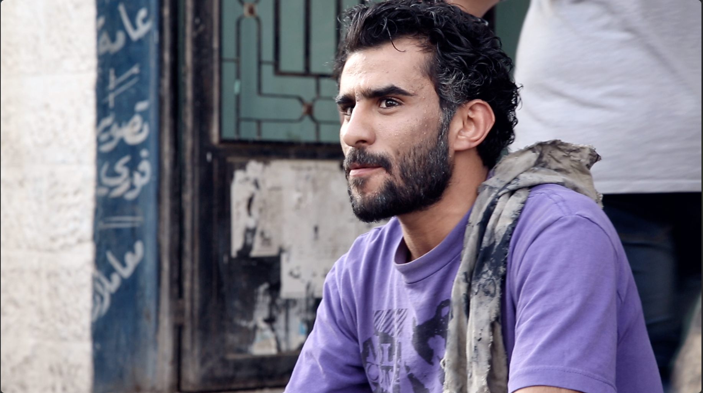
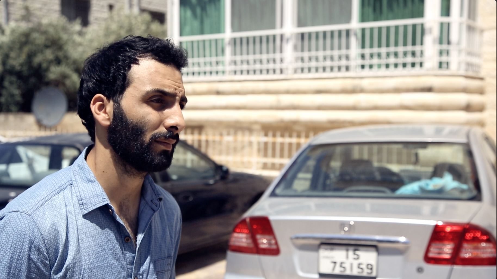
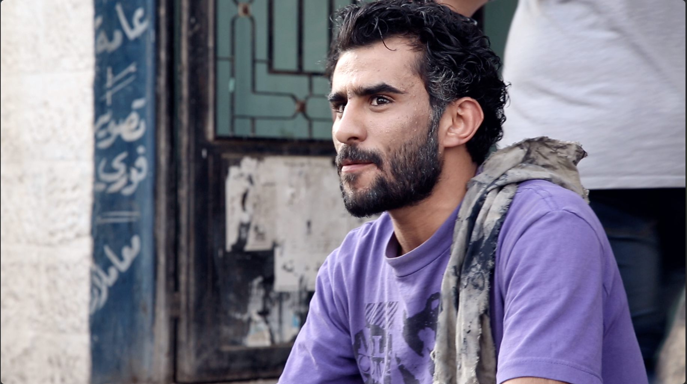
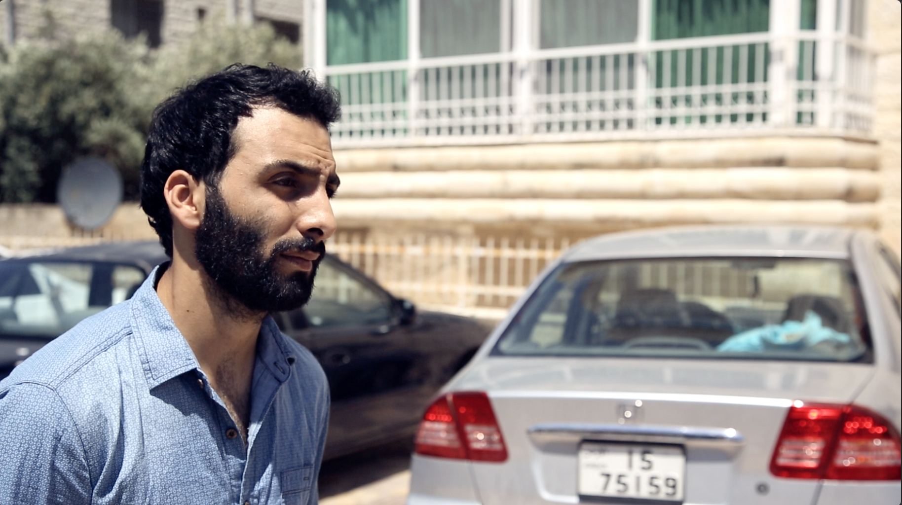

Description:
A satirical comedy program that talks about social problems that Jordanian society suffers from,
such as divorce, university violence, nepotism, and nepotism. In addition,
the program consists of four paragraphs. The first is a comedy sketch that talks about the origin of the issue, and the second paragraph talks about a young man who loves Japanese culture and is greatly influenced by it and aspires to He becomes an inventor, but circumstances are against him. The third paragraph includes the opinions of people from the street in a sarcastic comedic style. The fourth paragraph is a paradox between the old generation and the younger generation.
It consists of 15 episodes.


 


